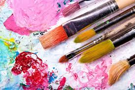

Art & Design

Sketching and drawing is a great way to improve your creative skills and start thinking in a different way. Art shows you that there is normally more than one way to solve a problem. Art encourages open ended thinking and creativity. These can be really helpful for personal development and solving problems. Skills you learn through sketching can be applied in a number of different areas in your life. Sketching helps develop a number of different areas of your brain. You develop your ability to focus and pay attention, a skill that can be very useful throughout your life and career.